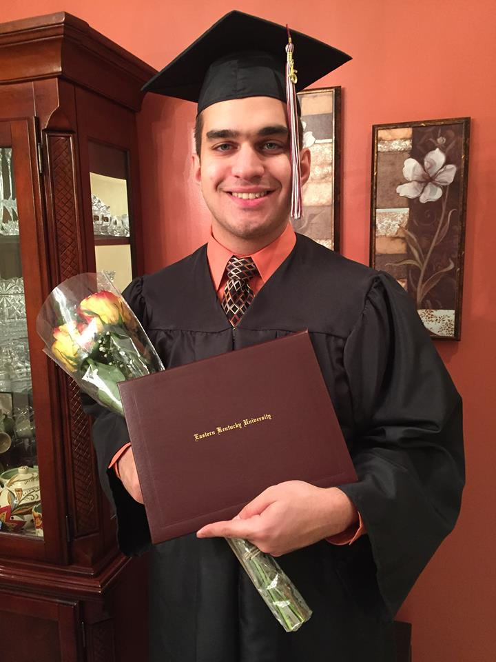

Greetings everyone! On July 2017, I was fortunate to get accepted to CodeLouisville's Front-End Web Development program.
In 2015, I recieved my Bachelor of Science degree in Biology from EKU. In addition, I have two Associate Degrees - Art and Science - from Big Sandy College
Community and Technical College. I studied pharmacy abroad for one year in Syria during 2010. I was introduced to web design by my dad's friend back in 2004 when I was 11 years old.
He showed me how to create a basic website using Microsoft FrontPage. The first HTML element I used was <marquee>. He also showed me how to host it to Angelfire.
I thought that was the coolest thing ever!
